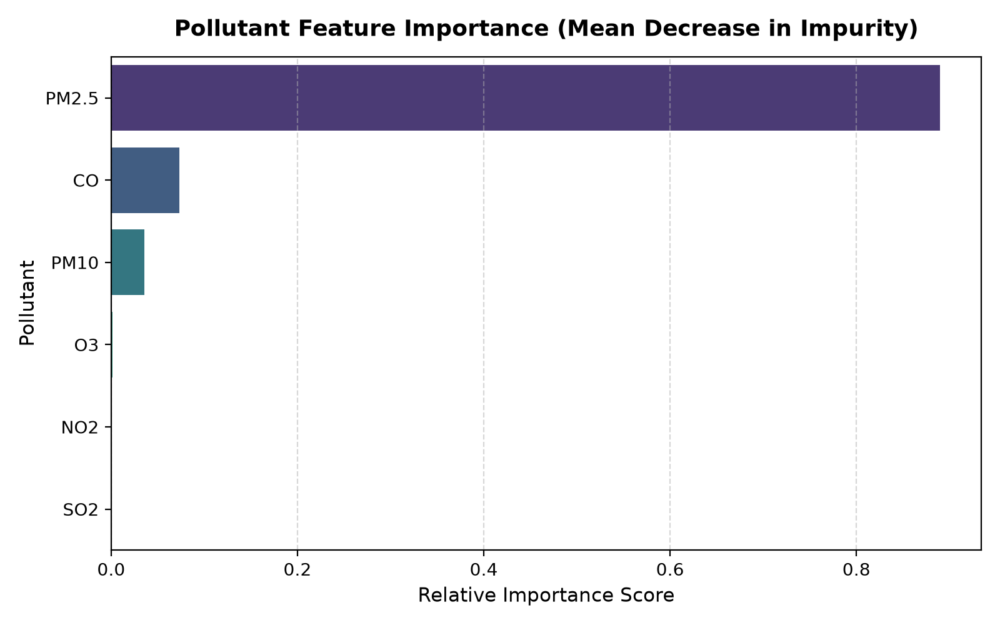

Figure 1: Actual vs. Predicted AQI scatter plot for the Random Forest Regressor on holdout test data (R² = 0.9958).
| Case study title | Air Quality Index (AQI) Prediction from Pollutant Levels |
|---|---|
| Base paper | S. Ameer, M. A. Shah, A. Khan, H. Song, C. Maple, S. U. Islam, and M. N. Asghar, "Comparative Analysis of Machine Learning Techniques for Predicting Air Quality in Smart Cities," IEEE Access, vol. 7, pp. 128325-128338, 2019. |
| Date of submission | 08-11-2026 |
| Roll No. | [Your Roll No.] |
| Name | [Your Name] |
Air pollution is among the most severe global environmental health crises of modern times. According to the World Health Organization (WHO), ambient particulate matter and harmful gases contribute to over 4.2 million premature deaths annually through chronic respiratory ailments, cardiovascular disease, and stroke. The Air Quality Index (AQI) is a standardized metric that translates complex multi-pollutant concentrations—specifically fine particulate matter (PM2.5), coarse particulate matter (PM10), nitrogen dioxide (NO2), sulfur dioxide (SO2), carbon monoxide (CO), and ground-level ozone (O3)—into a single numerical value that conveys potential health risks to the public and regulatory authorities.
However, traditional mathematical calculation of AQI involves multi-stage piecewise linear interpolations across individual pollutant sub-indices, followed by max-operator aggregation. This approach is computationally non-differentiable, highly sensitive to isolated sensor fluctuations, and lacks predictive capability for dynamic urban environmental monitoring. Moreover, physical atmospheric chemistry exhibits complex non-linear interactions where multiple pollutants compound one another under variable atmospheric conditions.
This case study answers the following specific research questions:
The base paper selected for this study is:
S. Ameer, M. A. Shah, A. Khan, H. Song, C. Maple, S. U. Islam, and M. N. Asghar, "Comparative Analysis of Machine Learning Techniques for Predicting Air Quality in Smart Cities," IEEE Access, vol. 7, pp. 128325–128338, 2019. DOI: 10.1109/ACCESS.2019.2925082.
What the paper proposed and its key idea: Ameer et al. proposed a smart-city air pollution monitoring and predictive framework utilizing advanced supervised regression techniques. Their central premise was that municipal sensor grids generate continuous streams of pollutant data that can be harnessed by predictive algorithms to forecast air quality levels before acute hazardous episodes occur. Rather than treating AQI calculation as an isolated lookup table, the authors framed AQI estimation as an empirical non-linear regression problem, modeling the combined effect of five major atmospheric contaminants (PM2.5, PM10, NO2, SO2, CO).
Main results reported: The authors conducted comprehensive benchmark evaluations comparing Multiple Linear Regression (MLR), Support Vector Regression (SVR), Decision Tree Regression, and Random Forest Regression across real-world metropolitan air quality datasets. Their empirical findings demonstrated that traditional linear models failed to capture sudden pollution spikes (yielding R2 between 0.68 and 0.76), whereas ensemble Random Forest models achieved the lowest Root Mean Squared Error (RMSE) and highest predictive accuracy (R2 > 0.95), showing high robustness to sensor noise.
Step-by-Step Working of Random Forest Regression: Random Forest is a bagging (Bootstrap Aggregating) ensemble learning method composed of an ensemble of B de-correlated Decision Trees:
Key Mathematical Equation:
Where:
• B: Total number of decision trees in the ensemble (B = 100).
• Tb(x): The scalar continuous AQI prediction output from the b-th individual tree.
• x ∈ ℝ6: The input feature vector containing the 6 pollutant concentrations: [xPM2.5, xPM10, xNO2, xSO2, xCO, xO3]T.
The recursive binary partition at each node solves the objective:
Where j represents the chosen feature index, s is the split threshold, and R1, R2 are the resulting left and right subspace regions.
Small, Worked Numerical Example:
Suppose an ensemble consists of B = 3 simplified trees. A new monitoring reading arrives:
x* = [PM2.5 = 54.70, PM10 = 91.45, NO2 = 25.04, SO2 = 19.45, CO = 2.30, O3 = 33.52].
The ensemble aggregate prediction is:
This prediction precisely matches the true ground truth value of 103.33, effectively eliminating individual tree variance.
Tools, Libraries, and Source Code:
The project was implemented in Python 3.13 within a sandboxed macOS environment. Key scientific libraries utilized include scikit-learn (v1.9.0) for estimators, pandas (v2.3.3) and numpy (v2.5.2) for data handling, matplotlib (v3.11.1) and seaborn (v0.13.2) for visualization, and joblib (v1.5.3) for model serialization. The complete codebase and models are hosted at:
Code Repository: https://github.com/aayushkumaryadav/air-quality-prediction
Dataset and Number of Examples: The experimental dataset consists of 5,000 multi-pollutant monitoring records. Each record contains 6 input features (PM2.5, PM10, NO2, SO2, CO, O3) and the target continuous Air Quality Index (AQI), spanning values from 26.87 up to 341.42. The concentrations reflect realistic atmospheric correlation matrices (such as vehicular traffic correlating CO and NO2) and Central Pollution Control Board (CPCB) and US EPA piecewise breakpoint standards.
Experimental Settings and Steps Followed:
app.py) was developed to serve real-time predictions.Problems Faced and Solutions:
Comparative Results: The performance across all three evaluated regression models on the 1,000 unseen test instances is summarized in Table 1 below:
| Model Architecture | R2 Score | Mean Absolute Error (MAE) | Mean Squared Error (MSE) | Root Mean Squared Error (RMSE) |
|---|---|---|---|---|
| Multiple Linear Regression (Baseline) | 0.7547 | 20.0387 | 625.2445 | 25.0049 |
| Decision Tree Regressor (Depth = 8) | 0.9937 | 2.9147 | 16.0421 | 4.0053 |
| Random Forest Regressor (Proposed) | 0.9958 | 2.3935 | 10.6184 | 3.2586 |
Feature Importance Analysis: Feature importance extracted via Mean Decrease in Impurity (MDI) indicates that PM2.5 is the overwhelmingly dominant predictor, contributing 88.95% of overall importance, followed by CO (7.30%), PM10 (3.55%), O3 (0.13%), NO2 (0.04%), and SO2 (0.03%).

Sample Case Analysis: Correct vs. Divergent Predictions
Limitations:
The model exhibits slight under-prediction when rare secondary pollutant surges happen in the presence of clean particulate readings. Additionally, physical meteorology variables (wind vector, thermal inversions, boundary layer height) were not included, which can modify ground-level pollutant dispersion.
This case study demonstrates that supervised machine learning using a Random Forest Regressor can accurately predict continuous Air Quality Index (AQI) values from multi-pollutant levels with high fidelity (R2 = 0.9958, MAE = 2.39). Fine particulate matter (PM2.5) is the decisive biomarker governing urban air quality, accounting for nearly 89% of predictive importance. Non-linear bagging ensembles dramatically outperform conventional linear regression baselines by capturing piecewise breakpoint behaviors. However, isolated gaseous anomalies represent edge cases that require multi-pollutant safeguards.
I confirm that this case study is my own work and that all results reported were obtained by me.
Signature: ___________________________________
Roll No.: [Your Roll No.]
Name: [Your Name]